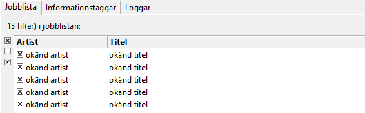
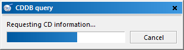
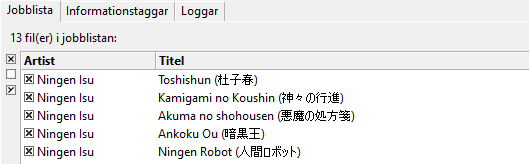
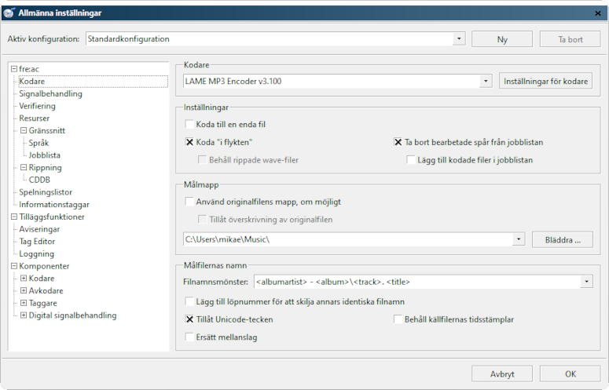
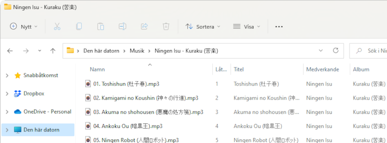
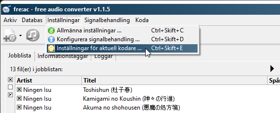
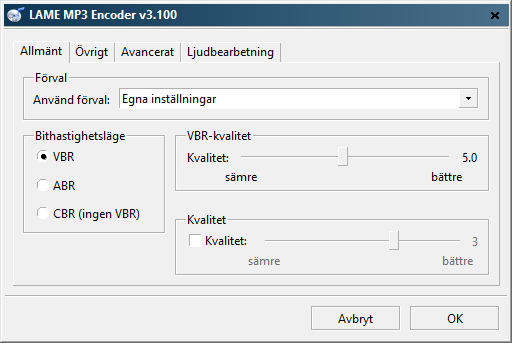
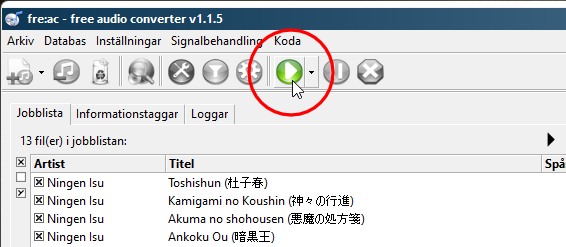
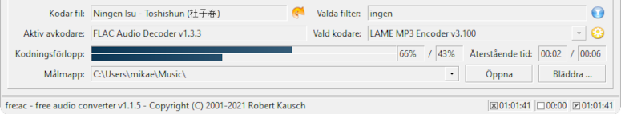

Hämta den senaste versionen av fre:ac från GitHub eller från fre:acs hemsida. Installera programmet och starta det. Mata nu in en ljud-cd i din CD/DVD-enhet. Spåren på cd:n dyker vanligtvis automatiskt upp i fre:acs huvudfönster. Om de inte gör det, klicka då på knappen Lägg till innehåll från ljud-cd i jobblistan för att lägga till spåren i jobblistan.
Eftersom vi inte vill behöva skriva in namn och information för våra cd-skivor för hand, kan vi helt enkelt söka i cd-databasen freedb på internet för att automatiskt fylla i namnen åt oss. För att göra det går vi till menyn Databas och väljer Sök i CDDB-databas. Vi bör få upp en ruta som ser ut så här:
Programmet kommer automatiskt att fylla i spårinformation:
När det är gjort bör vi konfigurera de allmänna inställningarna för programmet. Gå till menyn Inställningar och välj Allmänna inställningar. Det kommer att öppna följande dialogfönster:
I den första panelen kan du ställa in inställningarna för kodarna. fre:ac visar som standard kodaren LAME MP3. Vi kommer att använda den i den här handledningen. Säkerställ att alternativet Koda "i flykten" är ikryssat. Ange också din målmapp, d.v.s. mappen där du vill att de kodade MP3-filerna skall hamna. I det här exemplet är målmappen datorns standardmapp för musik.
I fältet Filnamnsmönster kan du ange hur filnamnen skall formateras. Du kanske vill ha dina musikfiler i mappar där namnet på albumet och artisten visas i mappens rubrik och filnamnen är spårnumret följt av spårets titel. Det motsvarande filnamnsmönstret är
<albumartist> - <album>\<track>. <title>Så i det här fallet kommer det att skapas en mapp som heter Ningen Isu - Kuraku (苦楽) och filnamnen kommer att vara spårnumret följt av en punkt och därefter spårnamnet. I Utforskaren ser det ut så här: 
För mer avancerade användare finns det flera andra inställningar, som kan anpassas till personliga önskemål eller krav.
Vi bör nu konfigurera LAME-kodaren, så att vi får ett hyggligt MP3-resultat. Gå till menyn Inställningar och välj Inställningar för aktuell kodare.
Det bör öppna ett fönster som liknar det du ser här nedanför.
fre:ac levereras med ett flertal olika förhandsinställningar för LAME-kodaren. De konfigurerar kodaren med olika inställningar som ger olika slutkvaliteter. Ju högre inställningen är (t.ex. Extrem), desto mer plats kommer MP3-filerna att ta upp på din hårddisk och desto bättre kommer de att låta. Du kan också ange dina egna inställningar och justera kvalitetsinställningarna var för sig. Du kan se ett exempel på det på bilden. Låt oss för tillfället lämna förinställningen på Standard. Klicka på OK, så skall vi välja vilka spår vi vill rippa och koda.
Nu när vi är tillbaka till huvudfönstret kan vi välja vilka spår vi vill rippa och koda. Till vänster om varje spår finns en liten kryssruta. Rutorna med ett litet × i sig är de som kommer att rippas och kodas. Eftersom du antagligen vill rippa hela cd:n, lämnar vi samtliga rutor ikryssade, men om du endast vill ha ett spår kan du avmarkera alla utom just det spåret.
Nu kan vi klicka på den stora uppspelningsknappen, som startar kodningsprocessen.
Nederdelen av fönstret kommer att visa en förloppsindikator:
Allteftersom låtarna kodas, kommer jobblistan (där alla titlar visas) automatiskt att ta bort de spår som kodats klart.
Gratulerar! Du har precis rippat och kodat din första cd med fre:ac!